14 Deskriptivna i inferencijalna statistika u jeziku R
Općenito rečeno, statistika je matematička disciplina koja proučava načine sakupljanja, sažimanja i prikazivanja zaključaka iz nekih podataka. U praksi statistiku najčešće koristimo kako bi na sažeti način opisali neki podatkovni skup budući da se niz tabličnih podataka relativno teško može interpretirati u svojem integralnom obliku. Statističke metode omogućuje nam razumijevanje varijabli podatkovnog skupa i njihovih međuodnosa te nam daju temelje za lakšu komunikaciju dobivenih zaključaka.
Literatura koja se bavi uvodom u statistiku često radi distinkciju između deskriptivne i inferencijalne statistike, ne zbog toga što su to dva izdvojena segmenta statistike, već uglavnom kako bi se lakše mogli objasniti neki osnovni statistički pojmovi u odgovarajućem kontekstu. Mi ćemo se u nastavku također držati ove distinkcije, budući da nam daje dobru podlogu za pregled dostupnih metoda jezika R za obavljanje određenih poslova statističke analize.
14.1 Deskriptivna statistika
Glavni cilj deskriptivne statistike jest sažeto opisati neke podatke uz pomoć numeričkih vrijednosti ili vizualizacija. Spomenuti pojam eksploratorne analize podataka zapravo se može objasniti i kao primjena metoda deskriptivne statistike nad novim podatkovnim skupom.
Kada gledamo novi, nepoznati podatkovni skup, jedna od prvih stvari koju proučavamo su tipovi varijabli (stupaca) u dobivenom podatkovnom skupu. Statistika varijable često razvrstava na nominalne, ordinalne, intervalne i omjerne, no mi ćemo u nastavku uglavnom koristiti jednostavnu podjelu na
- numeričke i
- kategorijske
zbog bržeg i jednostavnijeg prikaza metoda njihove obrade (pri čemu ćemo voditi računa o tome da diskretne numeričke varijable - kao što je npr. bacanje kockice - imaju svojstva i jedne i druge vrste tj. za njihovu obradu možemo koristiti i određene metode prilagođene numeričkim, ali i one namijenjene prvenstveno kategorijskim varijablama).
Učitajmo ponovo podatkovni skup Titanic kojeg smo upoznali u lekciji o upravljanju podatkovnim skupovima.
# učitajte podatke iz datoteke `Titanic.csv` u varijablu `titanic`
# nemojte koristiti parametar `stringsAsFactors = F` budući da nam u ovom podatkovnom skupu
# uglavnom odgovara faktoriziranje znakovnih varijabli
titanic <- read.csv("Titanic.csv")
titanic$Survived <- as.factor(titanic$Survived) # ovo su također faktori
titanic$Pclass <- as.factor(titanic$Pclass)
# proučite podatkovni okvir `Titanic`
glimpse(titanic)## Observations: 891
## Variables: 12
## $ PassengerId <int> 1, 2, 3, 4, 5, 6, 7, 8, 9, 10, 11, 12, 13, 14, 15,...
## $ Survived <fctr> 0, 1, 1, 1, 0, 0, 0, 0, 1, 1, 1, 1, 0, 0, 0, 1, 0...
## $ Pclass <fctr> 3, 1, 3, 1, 3, 3, 1, 3, 3, 2, 3, 1, 3, 3, 3, 2, 3...
## $ Name <fctr> Braund, Mr. Owen Harris, Cumings, Mrs. John Bradl...
## $ Sex <fctr> male, female, female, female, male, male, male, m...
## $ Age <dbl> 22, 38, 26, 35, 35, NA, 54, 2, 27, 14, 4, 58, 20, ...
## $ SibSp <int> 1, 1, 0, 1, 0, 0, 0, 3, 0, 1, 1, 0, 0, 1, 0, 0, 4,...
## $ Parch <int> 0, 0, 0, 0, 0, 0, 0, 1, 2, 0, 1, 0, 0, 5, 0, 0, 1,...
## $ Ticket <fctr> A/5 21171, PC 17599, STON/O2. 3101282, 113803, 37...
## $ Fare <dbl> 7.2500, 71.2833, 7.9250, 53.1000, 8.0500, 8.4583, ...
## $ Cabin <fctr> , C85, , C123, , , E46, , , , G6, C103, , , , , ,...
## $ Embarked <fctr> S, C, S, S, S, Q, S, S, S, C, S, S, S, S, S, S, Q...14.1.1 Univarijantna deskriptivna statistika
Pod pojmom univarijantne deskriptivne statistike zapravo mislimo da gledamo samo jednu varijablu podatkovnog skupa. Drugim riječima, zanima nas ponašanje tj. varijabilnost podataka unutar jednog stupca.
Kod kategorijskih podataka u pravilu možemo postaviti samo jedno pitanje:
- koja je zastupljenost pojedine kategorije?
Odgovor na ovo pitanje možemo prikazati:
- numerički (npr. uz pomoć funkcije
tableili funkcijedescribeiz paketaHmisc) - vizualizacijom (npr. uz pomoć stupčanog grafa)
Svi daljnji zadaci odnose se na podatkovni okvir titanic.
Zadatak 14.1 - numerički ispis zastupljenosti kategorija
# numerički prikažite zastupljenost pojedinih kategorijama
# za varijable `Sex`, `Pclass` i `Survived`
# isprobajte funkciju `table` i funkciju `describe` (iz paketa `Hmisc`)# numerički prikažite zastupljenost pojedinih kategorijama
# za varijable `Sex`, `Pclass` i `Survived`
table(titanic$Sex)
cat("--------------\n")
table(titanic$Pclass)
cat("--------------\n")
table(titanic$Survived)
cat("--------------\n")
#library(Hmisc) #ukoliko je potrebno
describe(titanic$Sex)
cat("--------------\n")
describe(titanic$Pclass)
cat("--------------\n")
describe(titanic$Survived)##
## female male
## 314 577
## --------------
##
## 1 2 3
## 216 184 491
## --------------
##
## 0 1
## 549 342
## --------------
## titanic$Sex
## n missing distinct
## 891 0 2
##
## Value female male
## Frequency 314 577
## Proportion 0.352 0.648
## --------------
## titanic$Pclass
## n missing distinct
## 891 0 3
##
## Value 1 2 3
## Frequency 216 184 491
## Proportion 0.242 0.207 0.551
## --------------
## titanic$Survived
## n missing distinct
## 891 0 2
##
## Value 0 1
## Frequency 549 342
## Proportion 0.616 0.384Zadatak 14.2 - vizualizacija zastupljenosti kategorija
# vizualizirajte zastupljenost kategorija varijable `Pclass`# vizualizirajte zastupljenost kategorija varijable `Pclass`
ggplot(titanic, aes(Pclass)) + geom_bar()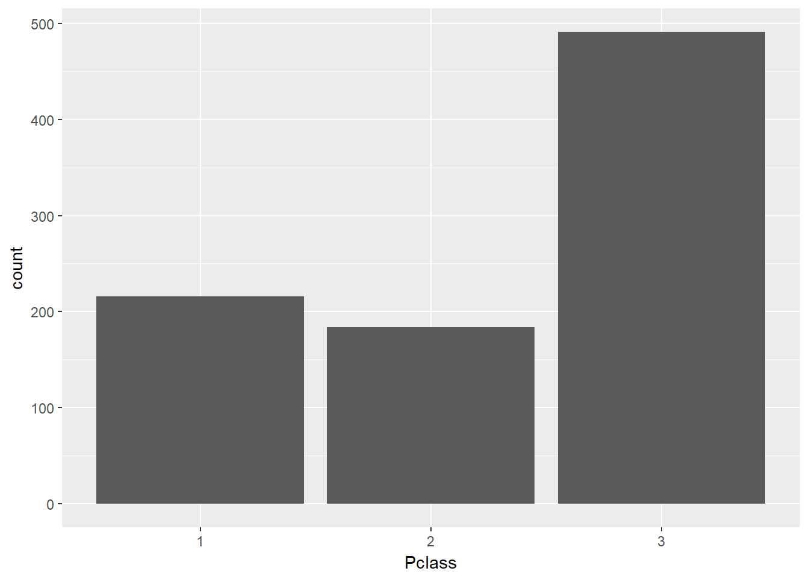
Za numeričke varijable imamo nešto više opcija. Kod ovakvog tipa varijabli statističare često zanima njihova tzv. “centralna tendencija” (tj. da li se varijabla grupira oko neke središnje vrijednosti) te njihova “disperzija” (koliko se “daleko” varijabla širi oko te srednje vrijednosti i na koji način, npr. simetrično ili “nakrivljeno”). Kraće rečeno, statističara zapravo zanima razdioba ili gustoća razdiobe varijable, o kojima smo pričali u prethodnoj lekciji.
“Srednju vrijednost” odabrane numeričke varijable možemo računati na više načina. Najčešće odabrane sredine su:
- aritmetička sredina (funkcija
mean) - medijan (funkcija
median) - vrijednost u “sredini” svih vrijednosti ako ih poredamo po veličini
Ključna razlika između ove dvije sredine jest ta što aritmetička sredina ima jasno definiranu matematičku podlogu ali je vrlo ovisna o karakteristikama podatkovnog skupa - pogotovo o tzv. “iskočnim vrijednostima” (engl. outliers). Medijan je robustnija mjera koju često odabiremo u slučajevima kada nas brine postojanje iskočnica unutar našeg podatkovnog skupa.
Za ocjenu “disperzije” varijable koristimo:
- standardnu devijaciju / varijancu (funkcije
sdivar) - raspon varijabli (funkcija
range) - “interkvartalni” raspon (funkcija
IQR)
Varijanca i standardna devijacija zapravo opisuju usrednjenje kvadrata udaljenosti od sredine (standardna devijacija je korjenovana varijanca). Raspon varijabli je jednostavno razlika između najmanje i najveće vrijednosti unutar skupa. Budući da ova mjera zapravo ovisi o samo dvije obzervacije, koje vrlo često mogu biti iskočnice, za procjenu raspona varijabli često se preporučuje korištenje tzv. “interkvartalnog” raspona koji gleda razliku između vrijednosti na 25. percentilu i one na 75. percentilu (tj. “prvi kvartil” i “treći kvartil”. Iako na ovaj način “odbacujemo” pola podatkovnog skupa, dobivamo puno robustniju mjeru koja neće ovisiti isključivo o najekstremnijim vrijednostima unutar skupa.
U statistici ćemo tako često čuti za pojam “sažetak kroz pet brojeva” (engl. five-number summary). Ti brojevi su minimum. prvi kvartil, sredina, treći kvartil, maksimum. Pod pojmom “sredine” obično mislimo medijan, iako statistički alati u ovaj sažetak često ubacuju i aritmetičku sredinu, čime on zapravo formalno postaje “sažetak od šest brojeva”.
Već smo gore spomenuli koje funkcije jezika R omogućuju izračun pojedine vrijednosti, no R također nudi i funkcije koje nam vraćaju više rezultata odjednom. Najčešće funkcije su:
summary- za numeričke varijable nam da je “sažetak od šest brojeva”describe(paketHmisc) - daje sažetak ali i mnoštvo dodatnih korisnih informacija
Zadatak 14.3 - izračun pojedinačnih stastistika numeričke varijable
# ispišite aritmetičku sredinu, medijan, standardnu devijaciju, raspon i interkvartalni raspon
# varijable `Age` podatkovnog okvira `Titanic`
# pripazite na nedostajuće vrijednosti! (sjetite se parametra `na.rm`)mean(titanic$Age, na.rm = T)
median(titanic$Age, na.rm = T)
sd(titanic$Age, na.rm = T)
range(titanic$Age, na.rm = T)
IQR(titanic$Age, na.rm = T)## [1] 29.69912
## [1] 28
## [1] 14.5265
## [1] 0.42 80.00
## [1] 17.875Zadatak 14.4 - skupni izračun stastistika numeričke varijable
# uz pomoć funkcije `summary` ispišite statistike varijable `Fare` podatkovnog okvira `Titanic`
# uz pomoć funkcije `describe` ispišite statistike varijable `Age` podatkovnog okvira `Titanic`summary(titanic$Fare)
cat("--------------\n")
#library(Hmisc) # ukoliko je potrebno
describe(titanic$Age)## Min. 1st Qu. Median Mean 3rd Qu. Max.
## 0.00 7.91 14.45 32.20 31.00 512.30
## --------------
## titanic$Age
## n missing distinct Info Mean Gmd .05 .10
## 714 177 88 0.999 29.7 16.21 4.00 14.00
## .25 .50 .75 .90 .95
## 20.12 28.00 38.00 50.00 56.00
##
## lowest : 0.42 0.67 0.75 0.83 0.92, highest: 70.00 70.50 71.00 74.00 80.00Za vizualizaciju numeričke varijable najčešće koristimo:
- histogram (geometrija
geom_histpaketaggplot2) - poligram frekvencija (geometrija
freq_poly) - gustoću razdiobe (geometrija
geom_density)
Za histogram i poligram frekvencija moramo paziti na odabir veličine ladice što može znatno utjecati na izgled grafa, dok kod grafa gustoće razdiobe moramo voditi računa da se radi o procjeni funkcije razdiobe koja ne mora odražavati stvarne karakteristike skupa (npr. ako vrijednosti nisu kontinuirane ili stvarna gustoća razdiobe nije glatka funkcija).
Zadatak 14.5 - vizualizacija numeričke varijable
# nacrtajte histogram varijable `Age` (proizovljno odaberite broj ladica)
# nacrtajte gustoću razdiobe varijable `Fare`ggplot(titanic, aes(Age)) + geom_histogram(bins = 10, na.rm = T)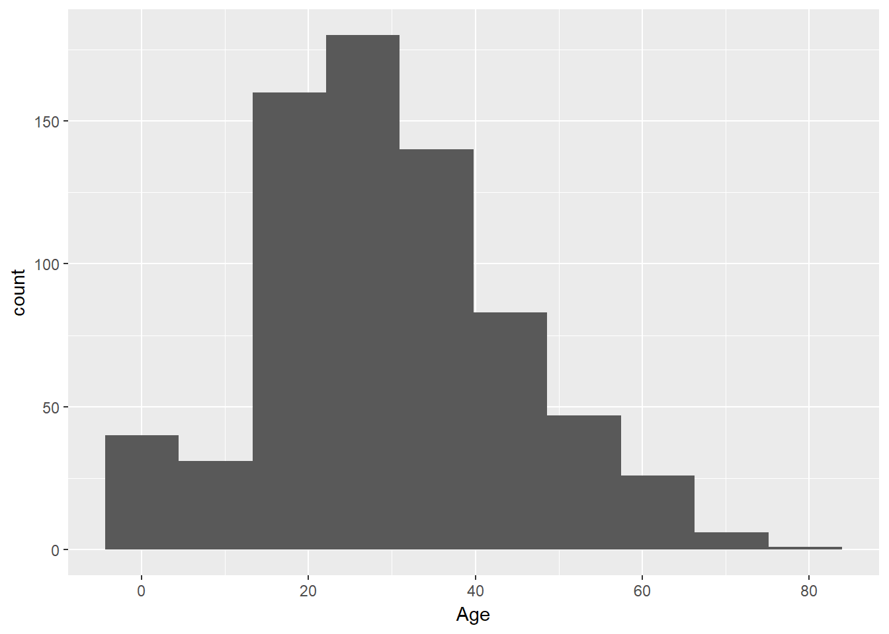
ggplot(titanic, aes(Fare)) + geom_density()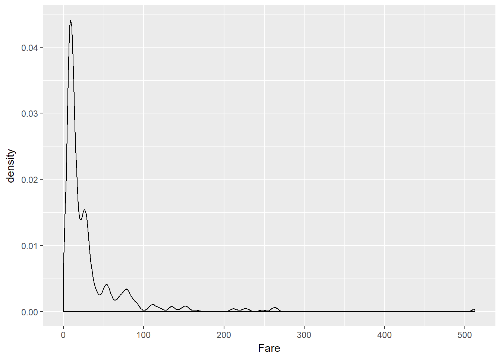
14.1.2 Bivarijantna i multivarijantna deskriptivna statistika
Dok se univarijantna deskriptivna statistika bavila samo jednom varijablom, kod bivarijantne i multivarijantne deskriptivne statistike zanimaju nas odnosi dvije ili više varijabli. Budući da ovi odnosi mogu biti vrlo kompleksni, kao i metode otkrivanja i interpretacije istih, mi ćemo se ovdje uglavnom usredotočiti na pregled odnosa dvije varijable te uočavanja:
- postoji li međuovisnost između dvije varijable i ako da, kakve je prirode
- pojavljuju li se određena grupiranja
- uočavaju li se određene iskočnice
Kao i kod univarijantne deskriptivne statistike, konkretne metode analize često ovise o tipu varijabli koje gledamo. Isto tako, kod analize obično gledamo određene numeričke pokazatelje ali se vrlo često oslanjamo na vizualizacije.
Kod bivarijantne analize dvije numeričke varijable često nas zanima pojava tzv. kolinearnosti, tj. linearne zavisnosti među varijablama. Ukoliko uočimo da su varijable povezane pozitivnom ili negativnom linearnom vezom, tu informaciju često možemo iskoristiti na različite načine (npr. ako je u novom podatkovnom skupu jedna od te vrijednosti nepoznata druga nam može poslužiti do procijenimo njezin iznos).
Kolinearnost možemo izračunati uz pomoć funkcije cor. Ova funkcija može računati različite vrste korelacije među varijablama, a default-na postavka je tzv. “Pearson-ov koeficijent korelacije” koji računa snagu linearne povezanosti varijabli. Kao njezin rezultat dobivamo vrijednost između -1 i 1; što je rezultat po apsolutnom iznosu bliži jedinici, to su varijable jače linearno korelirane.
Zadatak 14.6 - kolinearnost dvije numeričke varijable
# izračunajte koeficijent kolinearnosti između varijabli `Age` i `Fare`
# koristite funkciju `cor`
# budući da u skupu ima nedostajućih vrijednosti, dodajte parametar
# `use = 'complete'` (tj. "koristi samo kompletne parove")cor(titanic$Age, titanic$Fare, use = "complete")## [1] 0.09606669Za vizualizaciju dvije numeričke varijable (uz pomoć paketa ggplot2) imamo puno opcija. Neke od češćih su:
- točkasti graf (geometrija
geom_point) - prikaz trenda (geometrija
geom_smooth)
U pravilu ako prikazujemo trend onda ga dodajemo na točkasti graf kako bismo dobili vizualni dojam u kojoj mjeri izračunati trend odgovara prikazanim vrijednostima obzervacija.
Zadatak 14.7 - vizualizacija dvije numeričke varijable
# vizualizirajte odnos između numeričkih varijabli `Age` i `Fare`
# graf mora prikazivati i obzervacije i linearni trendggplot(titanic, aes(Age, Fare)) + geom_point(na.rm = T) + geom_smooth(method = 'lm', na.rm = T)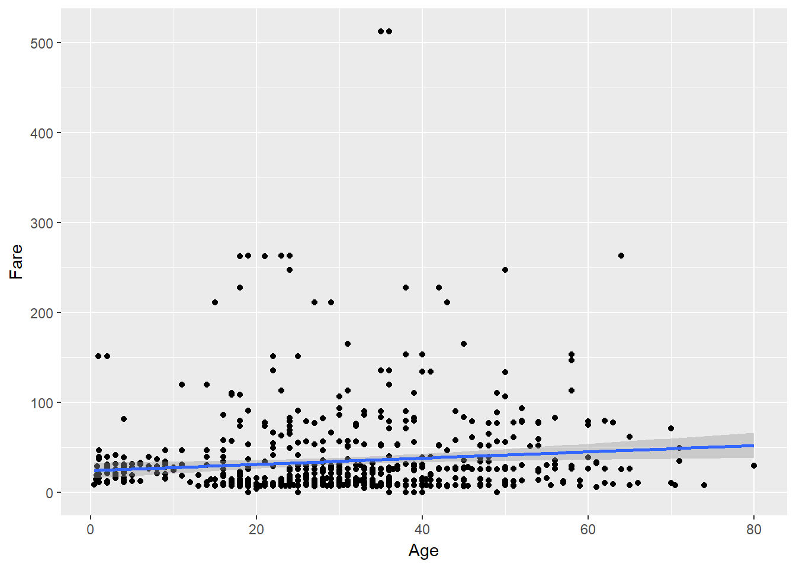
Za analizu dvije kategorijske varijable često se koristimo tzv. kontingencijskom tablicom. Ovo zapravo nije ništa drugo već matrica frekvencija koja jednu kategorijsku varijablu stavlja u retke, drugu u stupce. U jeziku R se za izradu kontingencijske tablice koristimo istom funkcijom koju smo koristili kod univarijantne analize jedne kategorijske varijable - funkcijom table - kojoj ovaj put prosljeđujemo dvije varijable kao parametre.
Zadatak 14.8 - kontingencijska tablica
# ispišite kontingencijsku tablicu varijabli `Pclass` i `Survived`table(titanic$Pclass, titanic$Survived)##
## 0 1
## 1 80 136
## 2 97 87
## 3 372 119Za vizualizaciju odnosa između dvije kategorijske varijable često se koristimo tzv. mozaik grafom (engl. mosaic plot). Budući da paket ggplot2 trenutno nema podršku za ovakav tip grafa, možemo se poslužiti funkcijom mosaicplot iz osnovnog paketa jezika R, koja kao parametar prima kontingencijsku tablicu.
Zadatak 14.9 - vizualizacija dvije kategorijske varijable - mozaik graf
# funkciji `mosaicplot` proslijedite
# kontingencijsku tablicu varijabli `Pclass` i `Survived`mosaicplot(table(titanic$Pclass, titanic$Survived))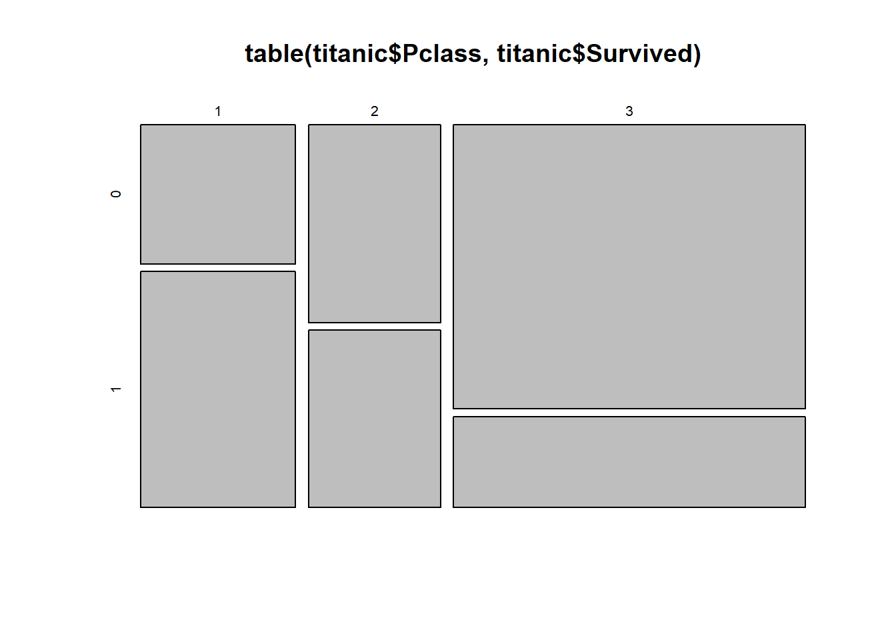
Ukoliko želimo crtati mozaik grafove uz pomoć paketa ggplot2, jedna od opcija koje imamo na raspolaganju jest proučiti paket ggmosaic dostupan na CRAN repozitoriju ali kojeg ovdje nećemo posebno obrađivati.
Za proučavanje odnosa numeričke i kategorijske varijable imamo više opcija na raspolaganju, a jedna od najpopularnijih je tzv. boxplot koji postavlja kategorije na os x te za svaku pojedinu kategoriju koristi vizualizaciju sa intuitivnim prikazom medijana, interkvartalnog raspona i mogućih iskočnica numeričke varijable na y-osi.
Zadatak 14.10 - ‘boxplot’ vizualizacija
# uz pomoć `boxplot` grafa vizualizirajte odnos
# varijabli `Pclass` i `Age`ggplot(titanic, aes(Pclass, Age)) + geom_boxplot(na.rm = T)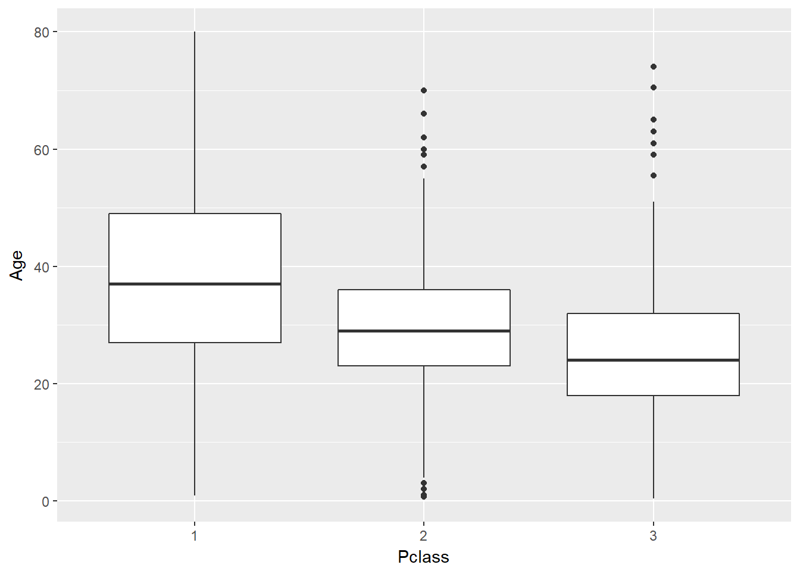
Alternativa prethodnom grafu je tzv. “violinski graf” koji će umjesto “kutija” nacrtati vertikalno orijentirane procijenjene gustoće razdiobi, tako da podsjećaju na izgled violine. U paketu ggplot2 ovo radi geometrija geom_violin.
Zadatak 14.11 - vizualizacija uz pomoć violinskog grafa
# uz pomoć violinskog grafa vizualizirajte odnos
# varijabli `Pclass` i `Age`ggplot(titanic, aes(as.factor(Pclass), Age)) + geom_violin(na.rm = T)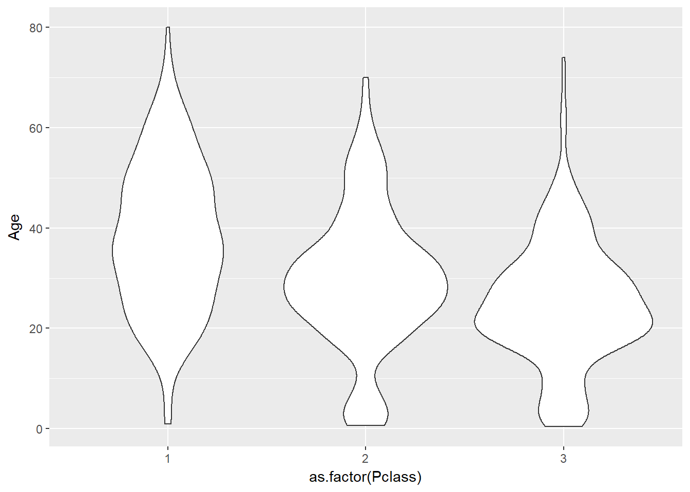
Multivarijantnu deskriptivnu statistiku nećemo posebno obrađivati zbog ograničenog mjesta, no podsjetiti ćemo čitatelje da kod stvaranja vizualizacija za više od dvije varijable uvijek imaju opcije korištenja estetika boje, oblika i sl. te da postoji mogućnost crtanja uvjetnih (facetiranih) grafova. Na ovaj način možemo na dvodimenzionalnom grafu staviti veći broj varijabli, no moramo biti pažljivi oko načina interpretacije i donošenja zaključaka.
Ovdje ćemo završiti priču o deskriptivnoj statistici. Za kraj, podsjetimo se već prikazane funkcije ggpairs paketa GGally koja nam omogućuje “masovnu vizualizaciju” podatkovnog skupa primjenom univarijantne i bivarijantne analize danog podatkovnog okvira u sklopu jedinstvenog grafa.
Zadatak 14.12 - funkcija ‘ggpairs’
# uz pomoć funkcije `ggpairs` vizualizirajte podatkovni okvir `Titanic`
# zbog jasnoće prikaza izaberite samo stupce:
# `Survived`, `Pclass`, `Sex`, `Age`, `Fare`, `Embarked`#library(GGally) ukoliko je potrebno
ggpairs(select(titanic, Survived, Pclass, Sex, Age, Fare, Embarked))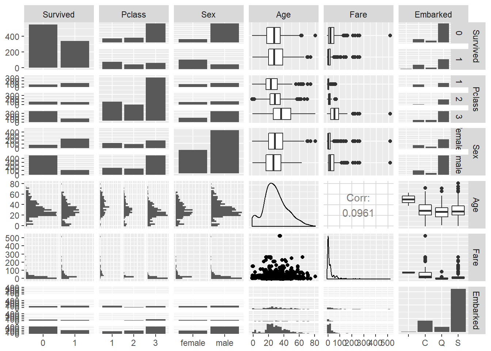
14.2 Inferencijalna statistika
Deskriptivna statistika bavi se sažetim prikazom podatkovnog skupa uz pomoć različitih statističkih parametara vizualizacija. Kod inferencijalne statistike statističara zanimaju ista pitanja kao i kod deskriptivne, no razlika je u tome što na raspolaganju ima samo djelić ukupnog podatkovnog skupa - cijeli podatkovni skup se tako naziva “populacija” a dio koji imamo na raspolaganju se zove “uzorak” Naziv “inferencijalna” upravo upućuje na to da se tražene vrijednosti ne računaju direktno, one se “zaključuju”. Inferencijalna statistika bavi se pitanjima kao što su kako odabrati uzorak i koje veličine kako bi on dobro “reprezentirao” populaciju, procjenom koliko možemo “vjerovati” statistikama dobivenim analizom uzorka i sl.
Budući da nemamo mjesta temeljito obraditi inferencijalnu statistiku na onoj razini koliko to područje zaslužuje, čitatelje opet upućujemo na alternative resursne koji se bave detaljnim uvodom i pregledom statistike. U nastavku ćemo zato tek predstaviti neke osnovne ideje inferencijalne statistike i uz pomoć jezika R demonstrirati kako one funkcioniraju u praksi.
Počnimo sa sljedećim primjerom: zamislimo da imamo populaciju od 100,000 osoba čija visina se ravna po normalnoj razdiobi sa sredinom 175 cm i standardnom devijacijom od 25 cm. Statističar ne zna ove podatke, budući da nema praktičnog načina za ispitati cijelu populaciju - pretpostavimo da može samo prikupiti podatke slučajno odabranog uzorka. Može se postaviti pitanje - ako odaberemo slučajni uzorak od n osoba, zapišemo njihove visine i izračunamo aritmetičku sredinu tih visina, koliko ćemo “točno pogoditi” aritmetičku sredinu visine cijele populacije?
Pokušajmo riješiti ovaj problem uz pomoć simulacije. Stvorit ćemo navedenu populaciju uz pomoć funkcije rnorm, a potom ćemo odabrati veličinu uzorka. Potom ćemo zadati R-u da za svaku veličinu uzorka deset puta ponovi uzorkovanje i za svaki pojedini uzorak predoči svojom linijom gustoće razdiobe. Ono što nas zanima jest kako će ta gustoća razdiobe izgledati naspram gustoće razdiobe populacije.
set.seed(1234)
# populacija od 100,000 osoba
pop <- data.frame(ind = 1:100000, visina = rnorm(100000, 175, 25))
# sljedeća funkcija će nacrtati funkciju gustoće populacije (crno)
# te potom uzeti 10 uzoraka zadane veličine i njihove
# gustoće nacrtati na istom grafu (u zadanoj boji)
createSamplingPlot <- function(sample_size, color = "#5577FF") {
g <- ggplot() + geom_density(data = pop, aes(visina))
for (i in 1:10) g <- g +
geom_density(data = sample_n(pop, sample_size), aes(visina), linetype = 2, color = color, alpha = 0.02)
g
}Zadatak 14.13 - gustoće razdiobe uzoraka populacije
# nacrtajte kako izgledaju gustoće uzoraka od 10, 100 i 1000 obzervacijacreateSamplingPlot(10)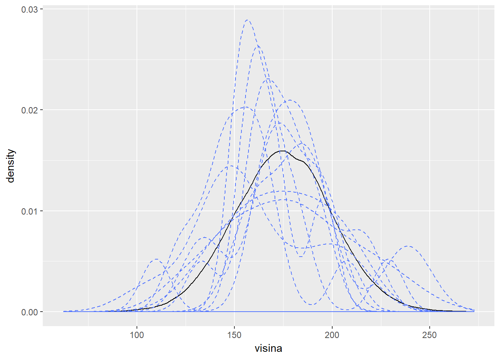
createSamplingPlot(100)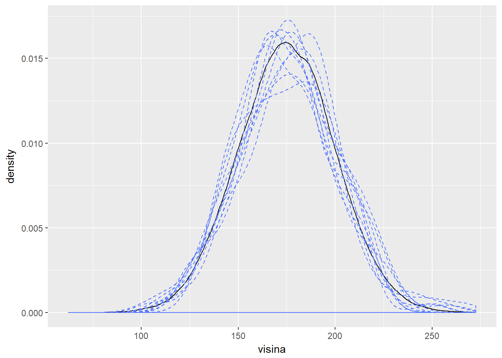
createSamplingPlot(1000)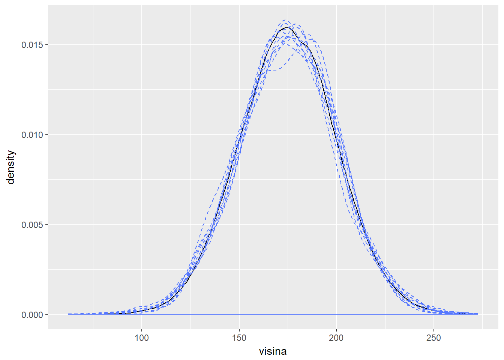
Vidimo da s povećanjem veličine uzorka njegova distribucija sve više i više liči na originalnu distribuciju te da već uzorak od 100 elemenata (koji predstavlja tek 0.01% populacije) zapravo sasvim dobro reprezentira populaciju. Ovo znači da možemo biti relativno sigurni kako njegova aritmetička sredina i standardna devijacija zapravo dovoljno dobro odgovaraju sredini i devijaciji cijele populacije. Ovo je zapravo srž inferencijalne statistike - ako koristimo dovoljno velik nasumično odabran uzorak populacije koja se ravna po normalnoj razdiobi, onda statistike uzorka dovoljno dobro odražavaju statistike populacije.
U pravilu za reprezentativan uzorak tražimo sljedeće:
- nasumičan odabir barem 30 uzoraka
- normalnu razdiobu gledanog parametra u populaciji
Nasumični odabir uzorka u praksi često predstavlja najveći problem (npr. anketiranjem obično ne dobivamo pravi slučajni uzorak populacije ljudi već samo onih koji su voljni ispuniti anketu). Zbog toga je ponekad jako teško ukloniti pristranost iz uzorka tj. dobiti uzorak koji je uistinu “nasumičan”. S druge strane, normalnost razdiobe parametra kojeg procjenjujemo nije nužno problematična - ako je razdioba “nakrivljena” često je dovoljno odabrati tek malo veći uzorak kako bi dobili dobru procjenu.
Dakle, zaključili smo da odabirom dovoljno velikog, slučajno odabranog uzorka možemo očekivati dobru procjenu parametra (npr. aritmetičke sredine) populacije. No isto tako jasno je da će svaki uzorak imati “svoju” sredinu, koja može biti manje ili više udaljena od stvarne sredine. Ovdje se pojavljuje interesantan fenomen koji se naziva centralni teorem.
Pojam centralnog teorema ćemo parafrazirati (i malo pojednostaviti) ovako: ako ponavljamo uzorkovanje i zapisujemo aritmetičke sredine svakog pojedinog uzorka, onda ćemo se uvjeriti da se te sredine ravnaju po “svojoj” normalnoj razdiobi čija je sredina jednaka aritmetičkoj sredini originalne populacije, a devijacija jednaka standardnoj devijaciji populacije podijeljenoj sa korijenom veličine uzorka (tzv. “standardnom greškom”).
Ovo možemo interpretirati i ovako - za dovoljno veliki nasumični uzorak vrlo su male šanse da isti nije “reprezentativan”, tj. možemo biti prilično sigurni da njegove statistike odgovaraju statistikama originalne populacije.
Dokažimo ovo simulacijom.
Zadatak 14.14 - centralni teorem - simulacija
set.seed(1234)
# stvorite matricu 1000 x 100, gdje svaki redak predstavlja
# slučajni uzorak od 100 vrijednosti varijable pop$visine iz prethodnog zadatka
# matricu pohranite u varijablu `uzorci`
# izračunajte aritmetičku sredinu svakog uzorka
# koristite funkciju `apply`
# rezultate pohranite u vektor `sredineUzorci`
# ispišite aritmetičku sredinu i standardnu devijaciju vektora `sredineUzorci`
# ispišite aritmetičku sredinu i standardnu devijaciju vektora `pop$visina`
# uz pomoć sljedeće funkcije na istom grafu nacrtajte gustoću
# razdiobe vektora pop$visine i vektora `sredineUzorci`
# ggplot(pop, aes(visina)) + geom_density() +
# geom_density(data = data.frame(x = 1:1000, sredine = sredineUzorci),
# aes(sredine), color = "red")set.seed(1234)
# stvorite matricu 1000 x 100, gdje svaki redak predstavlja
# slučajni uzorak od 100 vrijednosti varijable pop$visine iz prethodnog zadatka
# matricu pohranite u varijablu `uzorci`
replicate(1000, sample(pop$visina, 100)) %>% t -> uzorci
# izračunajte aritmetičku sredinu svakog uzorka
# koristite funkciju `apply`
# rezultate pohranite u vektor `sredineUzorci`
sredineUzorci <- apply(uzorci, 1, mean)
# ispišite aritmetičku sredinu i standardnu devijaciju vektora `sredineUzorci`
mean(sredineUzorci)
sd(sredineUzorci)
cat("--------------\n")
# ispišite aritmetičku sredinu i standardnu devijaciju vektora `pop$visina`
mean(pop$visina)
sd(pop$visina)
# uz pomoć sljedeće funkcije na istom grafu nacrtajte gustoću
# razdiobe vektora pop$visine i vektora `sredineUzorci`
ggplot(pop, aes(visina)) + geom_density() +
geom_density(data = data.frame(x = 1:1000, sredine = sredineUzorci),
aes(sredine), color = "red")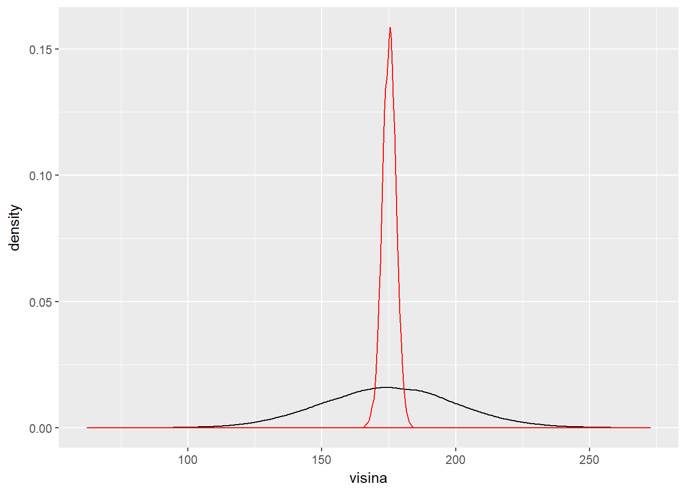
## [1] 175.1648
## [1] 2.506297
## --------------
## [1] 175.0732
## [1] 24.9864614.2.1 Testiranje hipoteza
Dakle centralni teorem nam pomaže da “vjerujemo” inferencijalnoj statistici. Njime se možemo koristiti i kod tzv. testiranja hipoteza.
“Testiranje hipoteza” je statistički postupak u kojem na osnovu danog uzorka pokušavamo odrediti da li imamo dovoljno dokaza da li neka tvrdnja vrijedi za cijelu populaciju. Naziv postupka kreće se od toga da je ta tvrdnja zapravo “hipoteza” koju onda pokušavamo dokazati. Formalno to provodimo korištenjem dvije hipoteze:
- nul-hipoteza ili \(H_0\), koja predstavlja “položaj skeptika”; to je uglavnom hipoteza koja tvrdi da promjene nema ili da nešto ne vrijedi
- alternativna hipoteza, ili \(H_A\) koja tvrdi da neke promjene ima i za to pokušava uz pomoć uzorka pružiti dovoljne dokaze
Kako alternativna hipoteza “dokazuje” tvrdnju? Uglavnom se koristimo poznavanjem centralnog teorema i činjenice da dovoljno veliki uzorak zapravo vrlo dobro procjenjuje neki parametar populacije. Ako uzmemo u obzir izračun standardne greške (standardna devijacija uzorka podijeljena sa veličinom uzorka), te centralni teorem koji navodi da se parametar uzorak “normalno rasipa” oko stvarne vrijednosti s devijacijom standardne greške, onda se s tim možemo poslužiti kao dokazom da je prilično nevjerojatno uočiti određene parametre uzorke ako je nul-hipoteza istinita.
Točne metode provedbe testa hipoteza za različite tipove varijabli i scenarije potražite u knjizi “OpenIntro statistics” koja daje vrlo detaljan pregled ovog postupka uz mnoštvo primjera. Mi ćemo u nastavku opet samo demonstrirati osnovne ideje uz pomoć prikladne simulacije.
Pretpostavimo sljedeći scenarij: populacija od 60 studenata ide na usmeni ispit. Studenti su nasumično raspoređeni kod dva profesora (nazovimo ih “A” i “B”), gdje svaki ispituje po 30 studenata. Nakon ispita kod profesora A ispit je položilo 20 studenata, dok je kod profesora B ispit položilo samo 12 studenata. Studenti koji su odgovarali ispit kod profesora B žale se da je za njih ispit bio “stroži” tj. da profesori nisu imali jednake kriterije. Možemo li simulacijom provjeriti da li za to postoje konkretni statistički dokazi?
Pretpostavimo da je “strogost” profesora jednaka, tj. da bi studenti bili jednako uspješni neovisno o tome kod kojeg profesora su polagali ispit. Naša nul-hipoteza je dakle sljedeća:
Odabir profesora ne utječe na ishod polaganja ispita.
dok bi alternativna hipoteza bila, naravno, da je to netočno i da će konačni rezultat biti između ostaloga ovisan i tome kod kojeg je profesora student završio.
Provedimo simulaciju na sljedeći način:
- svakog studenta opišemo rednim brojem i varijablom koja opisuje da li je prošao ili pao
- 32 studenta je prošlo ispit, oni dobivaju oznaku
T - 28 je palo, oni dobivaju oznaku
F
- 32 studenta je prošlo ispit, oni dobivaju oznaku
- studente slučajno rasporedimo kod profesora
AiB- nasumično odabranih 30 studenata dobiva oznaku
A - ostatak dobiva oznaku
B
- nasumično odabranih 30 studenata dobiva oznaku
- izračunamo apsolutnu razliku broja položenih ispita kod profesora
AiB - ponavljamo cijeli postupak veći broj puta i gledamo kako se ponašaju razlike prolaznosti
Nakon što ponovimo ovaj postupak veći broj puta možemo pogledati u kojem postotku slučajeva je razlika u broju polaganja bila veća ili jednaka 8. Ako je to manje od 5% slučajeva, što se u statistici smatra nekom okvirnom granicom kada stvari postaju “nevjerojatne”, možemo pretpostaviti da profesori nisu jednako strogi.
Pokušajmo provesti ovu simulaciju u jeziku R. Iako smo rekli da u jeziku R u pravilu ne bi trebali koristiti petlje, kako čitatelji ne bi dobili dojam da su one apsolutno nedopustive, u ovom zadatku ćemo se poslužiti for petljom kako bi bilo jasnije što simulacijom želimo postići. Čitatelji mogu za vježbu preinačiti kod tako da se izbjegne korištenje petlje te provjeriti postiže li se s tim veća učinkovitost simulacije.
Zadatak 14.15 - test hipoteza - simulacija
set.seed(1234)
studenti <- data.frame(id = 1:60, prosao = c(rep(T, 32), rep(F, 28)),
profesor = rep(NA, 60))
rez <- numeric(10000)
for (i in 1:10000) {
# stupac profesor napunite sa 30 slova A i 30 slova B, nasumično raspoređenim
# izračunajte apsolutnu razliku položenih ispita kod oba profesora
# upišite razliku u varijablu `rez` na indeks `i`
}
# nacrtajte stupčani graf razlika
# izračunajte u koliko slučajeva je apsolutna razlika
# jednaka ili veća broju od 8 studenataset.seed(1234)
studenti <- data.frame(id = 1:60, prosao = c(rep(T, 32), rep(F, 28)),
profesor = rep(NA, 60))
rez <- numeric(10000)
for (i in 1:10000) {
studenti$profesor <- sample(rep(c("A", "B"), each = 30), 60)
rez[i] <- sum(studenti[studenti$profesor == "A", c("prosao")]) -
sum(studenti[studenti$profesor == "B", c("prosao")])
}
# nacrtajte stupčani graf razlika
ggplot(data.frame(x = 1:10000, y = rez), aes(y, ..prop..)) + geom_bar() +
scale_x_continuous(breaks = seq(-20, 20, 2))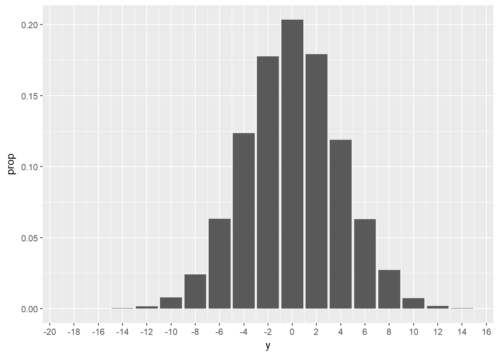
# izračunajte u koliko slučajeva je apsolutna razlika
# jednaka ili veća broju od 8 studenata
mean(abs(rez) >= 8)## [1] 0.0707Rezultat od oko 7% nam zapravo govori sljedeće: iako je relativno malo vjerojatno da bi kod profesora sa jednakim kriterijima postojala tolika razlika u prolaznosti, to i dalje nije toliko malo vjerojatno da bi mogli u potpunosti izuzeti hipotezu da su profesori “jednako strogi”. Drugim riječima, rezultati simulacije su takvi da ne možemo pobiti nul-hipotezu.
Vratimo se još malo primjeru. Što bi se dogodilo da u našem izračunu vjerojatnosti nismo gledali apsolutnu vrijednost razlike, već da smo samo gledali koliko je vjerojatno da profesor A ima 8 studenata koji su položili ispit više od profesora B? U tom slučaju bismo izračunali vjerojatnost od samo 3.5%, te bismo zaključili da pobijamo nul-hipotezu - što bi bilo pogrešno, budući da smo u ovom scenariju zanemarili sve slučajeve kada je (iz razloga slučajnog odabira) profesor A “stroži” od profesora B. Ovo nam govori da moramo biti vrlo pažljivi kako kod postavljanja hipoteza, tako i kod provedbe analize i interpretacije rezultata.

Programirajmo u R-u by Damir Pintar is licensed under a Creative Commons Attribution-NonCommercial-NoDerivatives 4.0 International License.
Based on a work at https://ratnip.github.io/FER_OPJR/